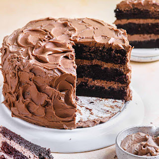
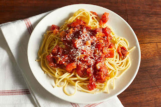

Food recipes
Welcome to Food Recipes. In this section everyone will learn new skills in making nice and
delicious food. By following the steps and apply it anyone can create a newly delicious food.
Choice the recipe you want and start your cooking journey.
How to Make the Best Moist Chocolate Cake: Step-by-Step Guide

This recipe is incredibly easy and requires just a bowl and a whisk—no mixer needed!
Step 1: Prepare the Dry Ingredients.
Sift the flour, cocoa powder, baking powder, and baking soda into a large mixing bowl.
Add both types of sugar and salt. Whisk everything together, making sure to press out
any lumps of brown sugar.
Step 2: Prepare the Wet Ingredients.
In a separate bowl, whisk together the eggs, oil, sour cream, and
vanilla extract until well combined.
Step 3: Combine Wet and Dry Ingredients.
Pour the wet ingredients into the bowl with the dry ingredients.
Mix using a whisk or an electric hand mixer on medium-low speed until everything is well combined.
The mixture will be thick and slightly dry at this point.
Step 4: Add Hot Coffee.
Gradually pour in the hot coffee in two parts to prevent clumps from forming.
Beat the mixture until smooth and evenly blended.
Step 5: Bake the Cake.
Divide the batter evenly between the prepared pans. Bake for 30-33 minutes, or
until the cakes spring back when gently pressed and a toothpick inserted in the center comes out clean.
Transfer the pans to a wire rack and let them cool for 15 minutes before inverting the cakes onto the
rack to cool completely.
How to Make Spaghetti in a Few Easy Steps

Making spaghetti at home is simple and quick! Using jarred tomato sauce means you can have
dinner ready in under 30 minutes. Read on to learn how to prepare
a basic spaghetti with meat sauce.
Step 1: Gather Your Ingredients and Supplies.
Before you begin, gather the following ingredients and supplies:
- A box of spaghetti
- A jar of marinara sauce
- 1-2 pounds of ground beef or Italian sausage
- Two large pots (one for boiling the pasta and one for cooking the sauce)
- Serving utensils
- Salt
- Water
Feel free to adjust the amount of meat to your preference,
but typically 1-2 pounds per large jar of sauce works best.
I usually use 1 pound of meat.
Step 2: Cook the Meat and Boil the Water.
Start by filling a large pot with water and adding a generous handful of salt.
Place it on the stove over high heat to bring it to a boil.
While the water heats up, cook the meat. Place the ground beef or sausage in a large pan and
set the stove to medium heat. Break the meat into smaller pieces and cook, stirring occasionally,
until it's browned and thoroughly cooked, about 10-15 minutes.
Once the meat is fully cooked, it's time to add the sauce.
Step 3: Mix in the Marinara Sauce.
Pour the jar of marinara sauce over the cooked meat in the pan.
Stir everything together until well combined. Reduce the heat to low and let the sauce simmer
while you cook the spaghetti.
Step 4: Cook the Spaghetti.
Once the water is boiling, add the spaghetti. Cook according to the package instructions,
usually between 7-11 minutes. Stir the pasta every few minutes
to prevent it from sticking together.
When the spaghetti is cooked to your liking, you can either drain it and
set it aside or add it directly to the pan with the sauce.
Step 5: Serve Your Spaghetti.
You have a few options for serving. I like to mix the spaghetti directly into the sauce pan.
Use tongs to transfer the noodles from the water to the sauce, adding a few spoons of pasta water.
This helps the sauce adhere better to the noodles.
Alternatively, you can serve plain spaghetti on individual plates and
spoon the sauce over the top.
Finish with a sprinkle of cheese, and enjoy your meal!
Bacon Macaroni and Cheese
img src="macaroni.jpeg" class="img1">
Prep Time: 10 mins
Cook Time: 35 mins
Total Time: 45 mins
Servings: 6
Yield: 1 (2-quart) casserole
Ingredients
• 2 slices bacon
• 8 ounces penne pasta
• 1 onion, chopped
• 1 clove garlic, minced
• 3 cups shredded Cheddar cheese
• 2 tablespoons butter
• 3 tablespoons all-purpose flour
• 2 cups milk
Steps
1. Preheat the broiler to 350 degrees F (175 degrees C).
2. Cook pasta in an enormous pot with bubbling salted water
until still somewhat firm. Channel.
3. Meanwhile, place bacon in an enormous, profound skillet.
Cook over medium high intensity until equitably brown. Eliminate bacon,
channel on paper towels, then, at that point, disintegrate and save.
Add onion and garlic into the skillet; cook and mix in bacon oil until
relaxed and fragrant. Eliminate from intensity and add cleaved cooked bacon;
put away.
4. To make the sauce: Soften margarine in a medium pan over low intensity;
add flour and mix continually for 2 minutes. Slowly add milk and keep mixing
until thickened. Mix in 2 cups of the ground cheddar until dissolved.
5. Combine cooked pasta, bacon and onion combination, and white sauce;
fill a 2-quart goulash dish. Sprinkle staying 1 cup ground cheddar on top.
6. Bake revealed in preheated broiler until cheddar on top is liquefied and
brown, 15 to 20 minutes. Serve warm.